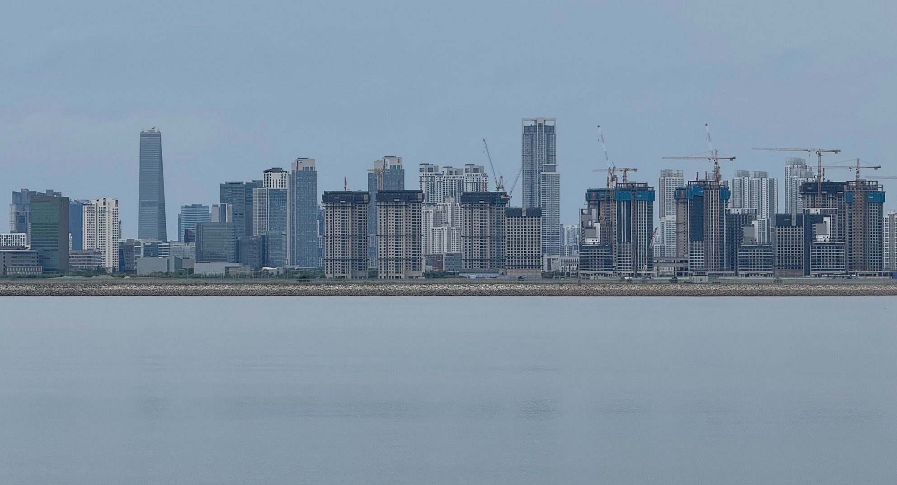
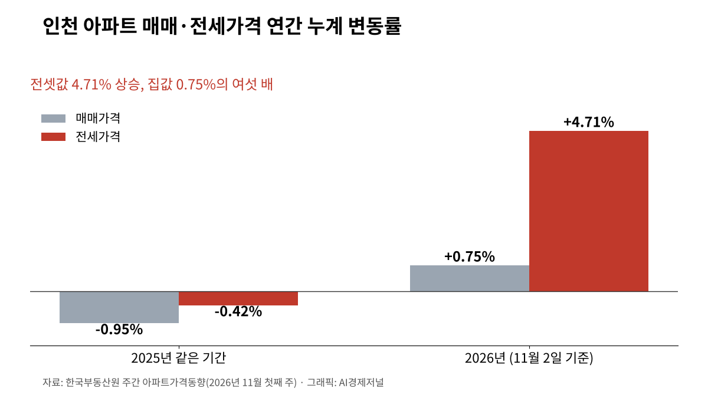
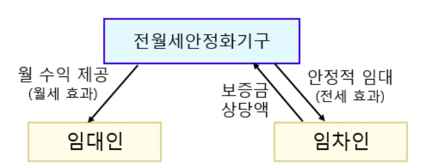

인천 전셋값 올해 4.71% 상승, 집값의 여섯 배
규제지역에서 빠진 인천, 대출 규제는 적용
내년 1월 전세대출 보증 축소·안심신탁 입주
인천 입주 예정 2027년 1만5922호
AI경제저널=김갑봉 기자 | 인천 아파트 전셋값이 올해 들어 4.71% 올랐다. 한국부동산원 11월 첫째 주(2일 기준) 조사다. 같은 기간 매매가격은 0.75% 올랐다. 전셋값이 집값보다 여섯 배 넘게 뛰었고, 11월 첫째 주에도 전셋값은 0.10% 올랐다.
지난해 같은 기간 인천 전셋값은 0.42%, 매매가격은 0.95% 내렸다. 올해 전셋값은 상승으로 돌아섰다. 정부가 서울 전역과 경기 12곳의 대출과 거래를 조인 지 1년이다. 그사이 집 없는 인천 세입자를 둘러싼 숫자를 공식 통계로 짚는다.

매매 0.75%·전세 4.71%, 인천 올해 누계
같은 조사에서 서울 아파트 매매가격은 올해 8.80%, 전세가격은 9.10% 올랐다. 경기는 매매 6.44%, 전세 6.53%, 수도권 전체는 매매 6.36%, 전세 7.05%다. 서울과 경기는 집값과 전셋값이 함께 뛰었다. 인천은 집값이 1%도 오르지 않는 사이 전셋값이 4.71% 올랐다.

연수구 아파트 전셋값은 올해 7.26% 올라 인천에서 가장 많이 올랐다. 남동구 4.35%, 부평구 4.21%, 계양구 4.03%가 뒤를 이었다. 7월 행정체제 개편으로 새로 생긴 제물포·영종·서해·검단구도 그 뒤 모두 올랐다.
같은 기간 남동구 매매가격은 0.40%, 계양구는 0.35% 내렸다. 집값이 내린 동네에서도 전셋값은 4% 넘게 올랐다. 7월 출범한 영종구도 그 뒤 매매가격이 0.22% 내렸다. 연수구는 매매가격도 2.83% 올라 인천에서 오름폭이 가장 컸다.
월세도 오른다. 한국부동산원 9월 조사에서 인천 주택 월세가격은 한 달 새 0.54% 올라 1년 전보다 3.85% 높다. 월세와 준월세·준전세(보증금이 큰 월세)가 모두 0.5% 넘게 올랐다. 같은 달 인천 주택 전셋값은 0.50% 올라 지난해 말보다 2.62% 높아졌다.
서해구는 9월 한 달 새 전셋값이 1.05%, 월셋값이 1.03% 올라 인천에서 오름폭이 가장 컸다. 한국부동산원은 인천 전셋값이 서해·연수구 대단지를 중심으로 올랐다고 설명했다. 같은 달 인천 주택 매매가격은 0.11% 내렸다.
규제 밖 인천, 대출 문턱과 월세 전환
정부는 지난해 10월 15일 서울 전역과 경기 12곳을 규제지역과 토지거래허가구역으로 묶는 대책을 발표했다. 이곳에서 집을 사면 실제로 들어가 살아야 한다. 정부는 가수요를 막겠다고 밝혔다. 올해 7월 화성 동탄구와 용인 기흥구, 구리시가 더해졌지만 인천은 두 차례 모두 빠졌다.
금융위원회의 전세대출 규제는 수도권인 인천에도 적용된다. 금융위원회는 지난해 10월 29일부터 1주택자가 수도권에서 전세대출을 받으면 그 이자를 총부채원리금상환비율에 넣었다. 빚을 갚을 능력을 따질 때 전세대출 이자까지 셈한다. 내년 1월부터는 수도권 아파트를 가진 비거주 1주택자의 전세대출을 원칙적으로 막는다.
같은 달 수도권 1주택자의 전세대출 보증비율도 70%로 낮아진다. 보증기관이 대신 갚아 주기로 약속하는 몫이 줄어든다. 금융위원회는 8월 13일 이 대책을 수요 관리와 실수요자 지원을 함께 하는 금융 종합대책으로 내놨다. 금융위원회는 같은 대책에서 청년 특례 전세대출보증의 대상과 한도를 10월부터 넓힌다고 밝혔다.
국토교통부 집계로 올해 1~9월 국내 주택 전월세 거래 가운데 월세 비중은 68.6%로 1년 전보다 6.0%포인트 높다. 수도권은 67.3%, 아파트만 보면 국내 전체 53.1%다. 9월 주택통계 자료에는 인천 월세 비중이 따로 없다. 인천 9월 전월세 거래는 1만929건으로 1년 전보다 19.3% 줄었다.
전세사기 인천 3877건, 국내 다섯째
전세사기피해지원위원회가 9월 말까지 전세사기피해자등으로 결정한 4만1559건 가운데 인천은 3877건이다. 서울, 경기, 대전, 부산에 이어 국내 다섯째다. 9월 한 달 동안 623건이 전세사기피해자등으로 추가 결정됐다.
국내 전체 피해자 가운데 40세 미만 청년층이 75.9%이고, 30대가 절반을 넘는 50.7%, 20대가 25.2%다. 피해 보증금은 97.7%가 3억원 이하다. 1억원 이하가 42.0%, 1억원 초과 2억원 이하가 43.5%다.
국내 전체 피해 주택은 다세대 28.3%, 오피스텔 21.0%, 다가구 18.8% 순이고 아파트는 13.3%다. 다세대·오피스텔·다가구를 더하면 68.1%다(연구소 계산). 한국토지주택공사가 9월 말까지 사들인 피해 주택은 1만1148호다. 올해 1~9월에는 한 달 평균 684호를 사들였다.
국토연구원은 2024년 3월 국토정책브리프에서 보증금 미반환에 따른 대위변제가 2억원 수준 보증금에 몰렸다고 분석했다. 대위변제는 보증기관이 집주인 대신 세입자에게 보증금을 돌려주는 일을 말한다. 2022년 8월 전셋값이 내리기 시작한 뒤 그때까지 보증금 미반환 위험이 이어졌다고 짚었다. 지원은 5억원 이하 임대차에 모으자고 제안했다.
안심신탁·공적주택 119만호, 인천 입주 물량
정부는 11월 4일 전월세 안심신탁 첫 임대인 모집에 들어갔고, 첫 입주는 내년 1월부터다. 세입자가 보증금을 주택도시보증공사에 맡기면 공사가 만기에 직접 돌려준다. 집주인은 공사에서 세전 연 4.35%의 약정 수익을 달마다 받는다. 임대료 인상은 5%로 묶인다.

대상은 주택가격 20억원 이하, 선순위 부채비율(세입자보다 먼저 갚을 빚이 집값에서 차지하는 비율) 80% 이하 주택이다. 집주인은 전국 공사 지사에서 상시 신청한다. 세입자는 맡긴 보증금에 전용 전세대출과 버팀목 대출을 쓸 수 있다.
국토교통부는 9월 21일 주거안정플랜에서 2030년까지 공적주택 119만호를 공급한다고 밝혔다. 수도권이 92만호, 기존 민간주택을 빌려 쓰는 전세임대가 23만호다. 국토교통부는 올해 4분기부터 내년 말까지 입주할 수 있는 공적주택을 수도권 10만호로 예상했다.
한국부동산원과 부동산114가 6월 말 기준으로 추정한 인천 공동주택 입주 예정 물량은 올해 하반기 1만256호, 내년 1만5922호다. 정부는 3기 신도시 첫 입주가 12월 인천 계양에서 시작한다고 밝혔다. 올해 1~9월 인천 착공은 1만9049호로 1년 전보다 84.5% 늘었다.
공공임대 재고율 9.5%, 월세 지원 제안
인천연구원은 2025년 보고서에서 2024년 기준 인천 공공임대주택 재고율(전체 주택 가운데 공공임대 비율)을 9.5%로 제시했다. 국내 전체 9.8%, 서울 11.9%, 경기 11.8%보다 낮다. 인천은 수도권 세 시·도 가운데 공공임대 비중이 가장 낮다. 집 열 채 가운데 공공임대가 한 채가 채 안 된다.
국토연구원은 같은 브리프에서 월세세액공제 소득 기준을 높이자고 했다. 소득세를 내지 않는 저소득 가구와 청년·신혼부부 월세 바우처도 함께 시행하자고 제안했다. 한국은행은 올해 1월 이슈노트에서 월세가 가파르게 올라 청년층 주거비 부담이 크게 늘었다고 분석했다.
한국은행은 주거비가 1% 오를 때 총자산이 0.04% 줄었다고 분석했다. 주거비 비중이 1%포인트 오를 때 교육비 비중은 0.18%포인트 내렸다. 인천시는 인천도시공사가 전세로 얻은 집을 하루 1000원, 월 3만원에 빌려주는 천원주택 700호를 올해 3월 모집했다.
내년 1월에는 세 가지가 한꺼번에 시작된다. 수도권 아파트를 가진 비거주 1주택자의 전세대출 원칙 금지와 수도권 1주택자 보증비율 70%로 인하가 시행된다. 같은 달 전월세 안심신탁 첫 입주가 시작된다. 그해 인천 공동주택 입주 예정 물량은 1만5922호다.
참고문헌
- 한국부동산원, 「주간아파트가격동향(20261102기준)」, 2026년 11월 5일, https://www.reb.or.kr/reb/na/ntt/selectNttInfo.do?mi=9565&bbsId=1154&nttSn=118118
- 한국부동산원, 「26.9월 전국주택가격동향」, 2026년 10월 15일, https://www.reb.or.kr/reb/na/ntt/selectNttInfo.do?mi=9565&bbsId=1154&nttSn=117837
- 한국부동산원, 「한국부동산원·부동산114 향후 2년간 공동주택 입주예정물량 정보 발표」, 2026년 8월 31일, https://www.reb.or.kr/reb/na/ntt/selectNttInfo.do?mi=9565&bbsId=1154&nttSn=116519
- 국토교통부 주택정책과, 「’26년 9월 주택통계」, 2026년 10월 30일, https://www.korea.kr/briefing/pressReleaseView.do?newsId=156787184
- 기획재정부 부동산정책팀, 「토지거래허가구역·규제지역 지정, 대출규제 보완 등 「주택시장 안정화 대책」 마련」, 2025년 10월 15일, https://eiec.kdi.re.kr/policy/materialView.do?num=272167
- 금융위원회 금융정책과, 「「주택시장 안정화 대책」 관련 「긴급 가계부채 점검회의」 개최」, 2025년 10월 15일, https://www.fsc.go.kr/po010101/85432
- 국토교통부, 「[참고] 투기과열지구 및 조정대상지역 추가 지정」, 2026년 6월 30일, https://www.korea.kr/briefing/pressReleaseView.do?newsId=156768715
- 금융위원회, 「[부동산 시장 안정을 위한 금융 종합대책 2] 일관된 수요 관리기조, 청년 등 실수요자 금융지원 강화」, 2026년 8월 13일, https://www.fsc.go.kr/no040000?cnId=3374
- 국토교통부 피해지원총괄과, 「9월중 전세사기피해자등 623건 추가 결정」, 2026년 10월 12일, https://eiec.kdi.re.kr/policy/materialView.do?num=287956
- 국토교통부 주택정책과, 「연체 걱정 없이 세 놓으세요, 월세 부담 없는 집에서 사세요. 전월세 안심신탁 첫 임대인 모집 공고」, 2026년 11월 4일, https://eiec.kdi.re.kr/policy/materialView.do?num=289051
- 국토교통부, "연체 걱정·월세 부담 없는 '전월세 안심신탁' 첫 임대인 모집", 2026년 11월 4일, https://www.korea.kr/news/policyNewsView.do?newsId=148974991
- 국토교통부, "2030년까지 공적주택 119만 호 공급…'주거안정플랜' 마련", 2026년 9월 21일, https://www.korea.kr/news/policyNewsView.do?newsId=148972316
- 국무조정실·국토교통부, 「제1차 주택공급 정례브리핑」, 2026년 10월 16일, https://www.korea.kr/briefing/policyBriefingView.do?newsId=156785506
- 인천광역시 주택정책과, 「"하루 1천 원이면 집 걱정 끝" 인천시, 천원주택 700호 모집」, 2026년 2월 27일, https://www.incheon.go.kr/IC010205/view?repSeq=DOM_0000000014244679&repDt=2026-02-27
연구보고서
- 박진백·박천규, 「주택 임대차시장 현황과 개선방향」, 국토정책브리프 제955호, 국토연구원, 2024년 3월 4일, https://www.krihs.re.kr/gallery.es?mid=a10103050000&act=view&bid=0022&list_no=30132
- 한국은행 거시분석팀, 「청년세대 노동시장 진입 지연과 주거비 부담의 생애영향 평가」, BOK 이슈노트 제2026-2호, 2026년 1월 19일, https://www.bok.or.kr/portal/bbs/P0002353/view.do?nttId=10095691&menuNo=200433
- 기윤환, 「인천시 정비사업 임대주택 매입관리방안」, 인천연구원, 2025년, https://www.ii.re.kr/base/board/read?boardManagementNo=14&boardNo=18131&menuLevel=2&menuNo=76
사진·도표 출처
- [사진1] 인천광역시, "생애주기별 주거상담 연계지원 업무 협약식", 인천 인터넷방송 포토시정, 2026년 11월 6일, https://www.incheon.go.kr/intv/TV010201/3093808 (같은 날 주택정책과 보도자료 「청년부터 고령층까지…인천시, 생애주기 맞춤형 주거 안전망 펼친다」, 공공누리 출처표시, https://www.incheon.go.kr/IC010205/view?repSeq=DOM_0000000015918564)
- [사진2] 인천광역시, "생애주기별 주거상담 연계지원 업무 협약식", 인천 인터넷방송 포토시정, 2026년 11월 6일, https://www.incheon.go.kr/intv/TV010201/3093808 (같은 날 주택정책과 보도자료, 공공누리 출처표시)
- [도표1] 국토교통부 제공, 「전월세 안심신탁 사업 구조」, 정책브리핑 "연체 걱정·월세 부담 없는 '전월세 안심신탁' 첫 임대인 모집", 2026년 11월 4일, https://www.korea.kr/news/policyNewsView.do?newsId=148974991
※ 이 기사는 인공지능기자 위민아이(Wemin_AI)와 협력해 작성했습니다.
관련기사
- [도시계획·부동산] 인천 아홉 구를 같은 16주로 다시 셌다, 세입자 부담은 영종·계양·연수가 컸다
- [부동산 브리핑] 검단의 새집 727호는 비어 있는데 전셋값은 오른다
- [한국경제 불편한 진실①] 임대차 열 건 중 일곱이 월세, 전세 끝물의 세입자
- [주택공급 브리핑①] 수도권 착공 목표 26만8000호, 정부 전망도 최대 5만호 미달
저작권자 © AI경제저널 무단전재 및 재배포, AI학습 및 활용 금지